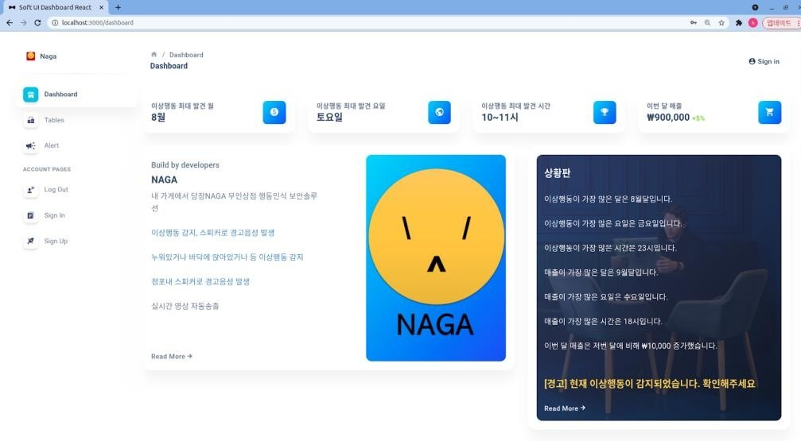

NAGA 프로젝트는 융복합 프로젝트로 Cloud, IoT, AI, Big Data 각 분야에서 한 명씩 모여 만들었습니다. 최근 무인점포 매장이 증가함에 따라 도난과 같은 무인점포 범죄 또한 증가했습니다. 이와 같은 범죄를 줄이기 위해 저희는 AI를 이용하여 24시간 매장을 감시하고, 이상이 있으면 점주에게 알림을 보내며, 또한 자동으로 신고까지 하는 프로젝트를 개발하고자 하였습니다.
NAGA는 무인 점포 내에 설치되어 있는 보안카메라에서 작동합니다.
1. 매장 내에 눕거나 앉아 있는 사람을 AI가 탐지하고 녹화를 시작합니다
2. 점주의 핸드폰으로 이상행동을 탐지했다고 알림을 보냅니다
3. 점주가 핸드폰을 통해 녹화된 영상을 보거나 원격으로 매장 내에 방송을 송출합니다
이번 프로젝트에서 저의 역할은 AI 모델은 구축하는 것이었습니다.
AI가 눕거나 앉은 자세를 식별할 수 있도록 해당 데이터를 수집하고(약 10,000장), 가장 높은 정확도를 내기 위해 Darknet이나 YOLO와 같은 여러 가지 학습 모델들을 사용해 보았습니다. 한 번 모델을 학습시키는데 며칠이 걸리기도 했지만, 이 과정에서 C언어를 얕게나마 배울 수 있었습니다.
융복합 프로젝트라는 이름답게 이번 프로젝트에서는 제가 경험해 보지 못한 다른 분야를 직접 눈으로 볼 수 있었던 좋은 기회였습니다. IoT, Cloud, Big Data를 6개월간 배운 저와 같은 학생들을 직접 만나 카메라를 통해 어떻게 데이터를 수집하는지, Cloud 서비스란 무엇이며 어떤 식으로 작동하는지, 그리고 통계 데이터는 어떻게 수집하고 표현하는지 알게 되었습니다. 무엇보다도, 각자 만들어낸 결과물을 합쳐가는 과정에서 나눈 대화, 오류가 났을 때 함께 해결하려 했던 노력, 프로젝트에서 1등을 하고 말겠다는 모두의 의지를 느낄 수 있었던 값진 경험이었습니다.
AI 모델 학습 당시, 이미지에서 사람을 추출하여 Cropping하는 기능이 완벽하지 않아 정확도가 다소 떨어졌었습니다(89~91%). 프로젝트가 끝나고 따로 Cropping하는 부분의 코드를 수정하고 모델을 재학습시켜 정확도 98%를 달성했습니다.